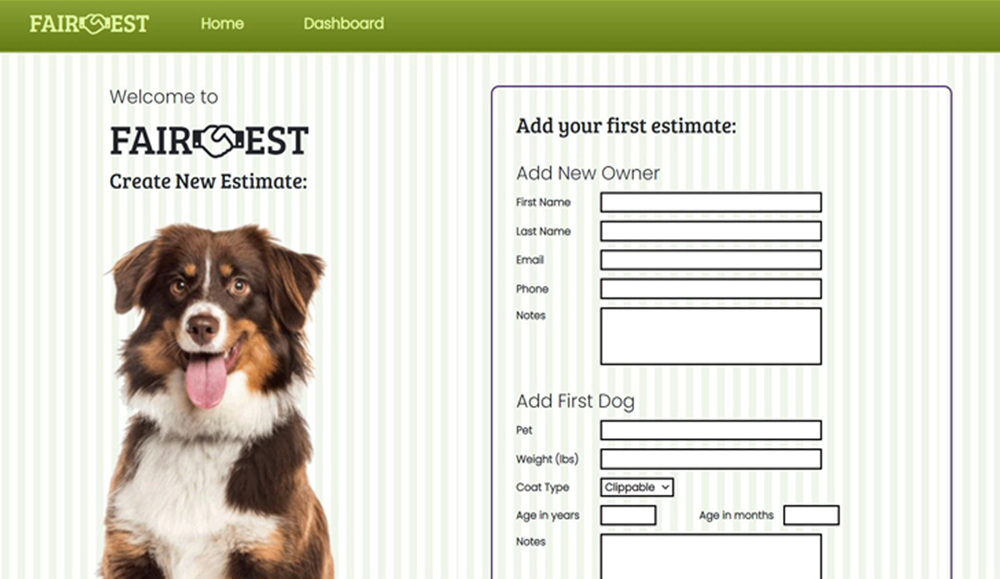

Project information
- Name: FairEST
- Category: Full Stack Development
- Tech: Python | Django ORM | JQuery
- Project date: 01 Sept, 2020
Estimates grooming services
● Developed an algorithm in Python that estimates grooming services and improves customer confidence by offering clear, consistent itemized service estimates based on weight and coat type instead of by breed.
● Used the Django ORM for a clean interface between server and database, as well as intuitive relationships between O OP models for a smooth UX
● Wrote scripts in JQuery and Javascript that enhance the user experience with exciting dynamic animations and interactions.